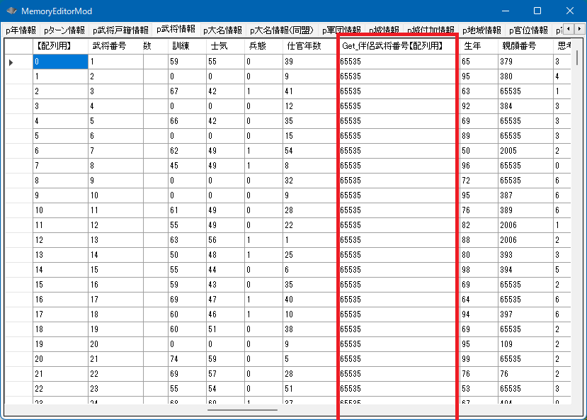
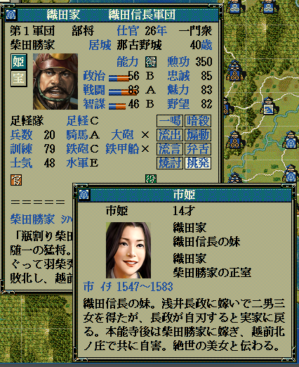

武将の結婚関連のAPIの説明となります。

int Get_伴侶武将番号【配列用】(int 武将番号【配列用】)
bool Set_姫結婚( int 姫武将番号【配列用】, int 夫武将番号【配列用】, BOOL 天蓋孤独死亡処理=TRUE )
bool Set_姫離婚( int 姫武将番号【配列用】, BOOL 天蓋孤独死亡処理=TRUE )
もしも、別の人とすでに結婚している場合は、その人とは離婚して、
改めて新しい人と結婚する形となります。
void カスタム::On_プレイヤ担当ターン《メイン画面》() {
int iOttoBushouID = Get_武将番号【配列用】(顔番号::柴田勝家);
int iHimeBushouID = Get_武将番号【配列用】(顔番号::織田市);
if (0 <= iOttoBushouID && iOttoBushouID < 最大数::武将情報::配列数 &&
0 <= iHimeBushouID && iHimeBushouID < 最大数::武将情報::配列数 ) {
// 二人が独身ならば
if (Get_伴侶武将番号【配列用】(iOttoBushouID) == 0xFFFF &&
Get_伴侶武将番号【配列用】(iHimeBushouID) == 0xFFFF ) {
bool success = Set_姫結婚(iHimeBushouID, iOttoBushouID);
if (success) {
デバッグ出力 << "二人は結婚しました" << endl;
}
}
}
}

void カスタム::On_プレイヤ担当ターン《メイン画面》() {
int iOttoBushouID = Get_武将番号【配列用】(顔番号::織田信長);
int iHimeBushouID = Get_武将番号【配列用】(顔番号::長井帰蝶);
if (0 <= iOttoBushouID && iOttoBushouID < 最大数::武将情報::配列数 &&
0 <= iHimeBushouID && iHimeBushouID < 最大数::武将情報::配列数 ) {
// 二人は結婚しているならば...
if (Get_伴侶武将番号【配列用】(iHimeBushouID) == iOttoBushouID) {
bool success = Set_姫離婚(iHimeBushouID);
}
}
}
「武将 － 婚姻」に関する主な所は以上となります。
詳しくは「武将情報型.h」を参照してください。